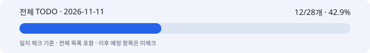

14디멘션·중앙 고정 글자·기존 계약 재사용 · 사후 기록일 2026-11-12
작업일: 2026-11-11 (KST) · 이름: 박지수 · 팀: 고급프로젝트 2팀.
기록일: 2026-11-12. 누락 일지의 사후 기록이며 원본 작업일·커밋일·기록일을 구분한다. 보고일 말까지 확인 가능한 자료만 사용하고 오늘의 성과를 과거 날짜에 넣지 않는다.
제품 연출과 한글 합성 개선, 서빙 계약 차이 점검 담당.
저장된 5개 제품 결과에 글자 색·세로 위치 자동 조절과 중앙 고정 합성을 적용한 기록을 확인했다. 이 재합성 단계는 이미지 API 호출 0회다. 원래 배경 생성 비용과 구분한다.
P1·P3의 CTA는 아래 대체 배치를 사용했다. P3 최소 대비 약4.29:1은 목표4.5:1 미달이며 통과로 바꾸지 않는다. 나머지4개는 최소 대비4.5 이상으로 기록됐다.
MPO 정책·기존 폰트/라이선스/SHA·보호 영역과 실제 제품 마스크·서명형 프로필 차이를 원문별 회신 초안으로 나눴다. 기존 기능을 새로 만들도록 확대하지 않는 방향이다.
실제 14디멘션 묶음의 뷰티 커밋 시각은 11/12 00:10 KST다. 11/11 로컬 실험을 그날 원격 게시 완료로 소급하지 않는다.
활성 체크: 12/28개 · 42.9%. 이 수치는 일지 체크이며 코드/제품 전체 완성률이나 당일 자기평가가 아니다.
11/05 재분류 이후 현행 MVP·고도화7개·공동 검증/인수만 활성으로 센다. 과거·비적용·보류는 제외하며 전체 목록에 남긴 원문을 보존한다.
활성 체크: 12/28개 · 42.9%

전체 TODO · HTML 전체 목록 · 진행률 데이터 · 날짜별 근거
본인 자기평가: 미확정. 당일 0·25·50·75·100% 평가가 제공되지 않아 임의의 숫자를 만들지 않았다. 확인된 작업 결과는 2번에 적었으며 자동 TODO 비율로 대체하지 않는다.
기존 이미지 기능이 있는 항목은 재사용하고 서빙의 필드·좌표·버전 차이만 맞추도록 답변 초안을 정리했다. 회신 초안, 사용자 직접 해결, 실제 게시·정책 승인·서명은 같은 상태가 아니다.
자동 글자 배치는 제품 의미를 이해하는 검출기가 아니다. 대비/경계 목표 미달을 영수증과 함께 보여주고 강제 배치를 통과로 숨기지 않아야 한다.
권리·서명·정규화 정책과 렌더러 구현을 혼동하면 이미지 파트 범위가 커진다. GCP 배포나 정책·비용 승인 완료로 처리하지 않는다.
M1 10/30·M2 11/06은 목표일 이력이다. 미확인 표본·합격 기준·청구·공동 인수는 완료로 처리하지 않는다.
5개 제품의 배치·대비 비교와 기존 기능/계약 차이 설명 자료를 남겼다. 생성 이미지와 비공개 권리 자료는 공개 일지에 넣지 않는다.
당시 후속 계획: 최신 이미지 묶음을 게시하고 dev 호환 차이를 확인한 뒤 실제 4:5 경로를 검증한다.